핵심 요약
GRS-SLAM3R은 DUSt3R식 pointmap prediction을 real-time RGB-only dense SLAM으로 확장하기 위해 latent memory를 gate로 관리하고 긴 trajectory를 submap 단위로 정렬한다.
이 논문은 gated recurrent spatial memory와 keyframe 기반 local/inter-submap alignment를 결합해 연속 RGB frame에서 dense world-frame point cloud와 camera pose를 실시간으로 추정한다.
Gated Recurrent State
reset/update gate로 어떤 memory token을 억제, 보존, 업데이트할지 결정.
World-frame Dense Output
RGB에서 local pointmap, world-frame pointmap, confidence, 6-DoF pose를 함께 출력.
Hierarchical Submap Alignment
submap별 memory reset과 pose-graph registration으로 recurrent drift 전파를 제한.
Real-time Dense SLAM
single RTX 4090에서 online dense reconstruction과 pose estimation을 real-time 수준으로 수행.
pairwise 3D prior
pointmap prediction은 강하지만 online memory와 global SLAM consistency를 단독으로 보장하기 어려움.
continuous reconstruction
online reconstruction으로 확장하지만 긴 sequence의 spatial memory와 drift control이 여전히 어려움.
gated memory + submaps
선택적 recurrent memory update와 local/global submap alignment를 결합해 RGB-only dense SLAM으로 구성.
논문 상세 정리
아래부터는 기존 논문 내용을 최대한 담은 상세 해석이다. 핵심 흐름에서 벗어나는 배경지식, notation, 부가 자료는 접어두었다.
Problem: DUSt3R 계열을 왜 바로 SLAM으로 쓰기 어려운가
GRS-SLAM3R의 출발점은 DUSt3R 기반 end-to-end reconstruction이 camera calibration 없이 dense 3D를 잘 예측하지만, 대개 image pair 또는 short sequence 중심이라 online SLAM에 필요한 장기 spatial memory와 global consistency가 부족하다는 점이다.
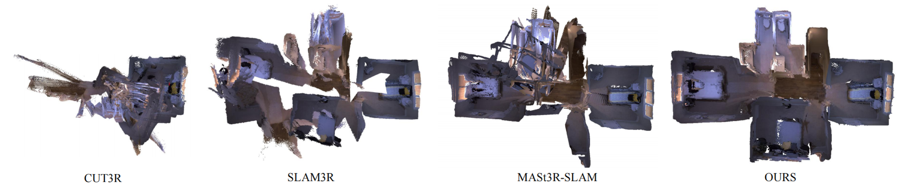
문제는 “좋은 pointmap prior” 자체보다, 그 prior를 시간적으로 누적하고 전체 map으로 묶는 방식에 있다.
pose와 dense geometry를 RGB stream에서 동시에 얻어야 함.
image pair prediction은 spatial memory와 long-term consistency를 직접 제공하지 않음.
오래된 memory나 noisy observation이 누적되면 latent state가 drift함.
긴 sequence에서는 하나의 recurrent state만으로 global drift를 제한하기 어려움.
Related Work 맥락 보기
논문은 dense monocular SLAM, 3D reconstruction, DUSt3R 기반 online reconstruction을 비교하며, 자신들의 위치를 real-time RGB-only dense SLAM으로 잡는다.
| 계열 | 강점 | GRS-SLAM3R의 문제의식 |
|---|---|---|
| Sparse / feature SLAM | 빠르고 안정적인 tracking | dense geometry가 부족해 planning/collision avoidance에 한계. |
| NeRF / 3DGS SLAM | 고품질 dense representation | depth, intrinsics, per-scene optimization에 의존하거나 실시간성이 약할 수 있음. |
| DUSt3R / MASt3R | camera-free pointmap prediction | pairwise 3D prior를 online SLAM memory로 확장해야 함. |
| CUT3R / SLAM3R | continuous reconstruction 방향 | spatial memory update/forgetting과 long sequence drift를 더 직접적으로 다룰 필요. |
Mechanism: gated recurrent state와 submap이 어떻게 맞물리나
방법론은 두 축으로 정리된다. Frontend는 gated recurrent state로 frame-level pointmap과 pose를 예측하고, backend는 keyframe/submap 구조로 local alignment와 inter-submap pose graph를 수행한다.
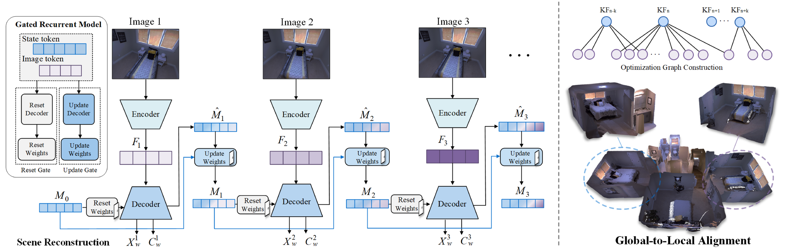
GRS-SLAM3R은 하나의 latent state를 무작정 누적하지 않고, gate로 memory를 선택적으로 업데이트한 뒤 submap 단위로 drift를 끊는다.
| 모듈 | 담당하는 문제 | 출력/효과 |
|---|---|---|
| Encoder | 현재 frame을 token representation으로 변환 | \(F_t\) |
| Reset gate | 현재 관측과 결합하기 전에 irrelevant memory 억제 | \(M_t^{\mathrm{reset}}\) |
| Decoder | memory token, image token, pose token 사이 정보 교환 | candidate memory와 enriched feature |
| Update gate | 새 memory와 이전 memory의 비율 결정 | \(M_t\) |
| Submap alignment | long sequence drift를 submap 단위로 제한 | local map과 global pose graph |
입력은 monocular RGB sequence \(\{I_t\}_{t=1}^{N}\)이고, 목표 출력은 dense point cloud \(X_t\), confidence \(C_t\), camera pose \(P_t\)다. 먼저 encoder가 현재 frame token을 만든다.
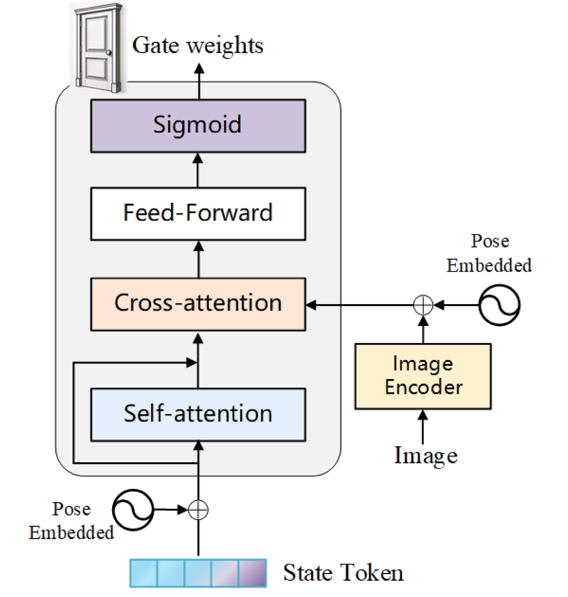
Reset gate는 오래되었거나 현재 관측과 맞지 않는 memory component를 줄인다. 그 뒤 decoder는 reset memory, pose token, frame token을 함께 처리해 candidate memory와 frame feature를 갱신한다.
Decoder 이후에는 local camera frame과 global world frame의 pointmap을 모두 예측한다. 논문이 DUSt3R와 달리 world coordinate pointmap을 직접 출력한다고 강조하는 이유가 여기에 있다.
새 frame이 마지막 keyframe이나 submap anchor와 충분히 겹치지 않으면 keyframe 또는 새 submap을 만든다. 이렇게 submap 단위로 latent memory를 reset하면 long-horizon recurrent drift가 전체 trajectory로 계속 전파되는 것을 줄일 수 있다.
Training loss와 notation 보기
학습은 CUT3R을 따라 confidence-weighted 3D regression loss와 pose loss를 사용한다. 방법론의 핵심은 gate/submap이므로 loss 식은 보조로 접어둔다.
| 기호 | 의미 | 역할 |
|---|---|---|
| \(\hat{x}_i\), \(x_i\) | 예측/GT 3D point | scale-normalized pointmap supervision. |
| \(c_i\) | confidence | hard pixel 영향 조절, confidence collapse는 \(-\beta\log c_i\)로 방지. |
| \(\hat{q}_t\), \(\hat{\tau}_t\) | 예측 pose의 rotation/translation | pose supervision을 rotation과 scale-normalized translation으로 분리. |
Evidence: pose, reconstruction, runtime을 어떻게 검증했나
평가는 camera pose accuracy, surface reconstruction, real-time performance, ablation으로 구성된다. Test dataset은 NRGBD, 7-Scenes, Apartment, NES이며, tracking은 ATE-RMSE, reconstruction은 accuracy/completeness를 중심으로 본다.
이 논문은 task를 dataset 이름보다 “SLAM 시스템으로서 무엇을 만족하는가”에 맞춰 읽는 편이 좋다.
7-Scenes ATE-RMSE로 frame별 pose 안정성 확인.
NRGBD, 7-Scenes, Apartment, NES에서 reconstruction quality 확인.
FPS와 ablation으로 gate/local alignment/submap의 역할 확인.
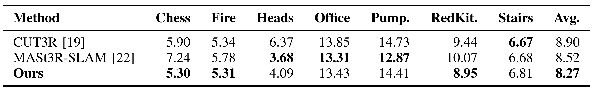
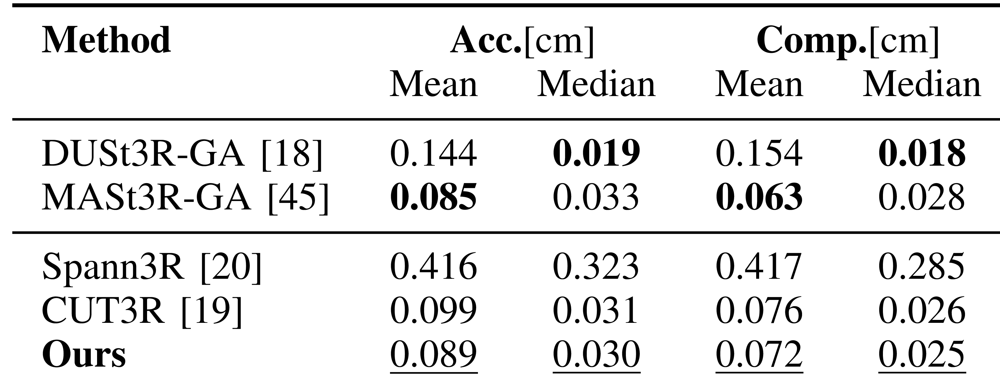
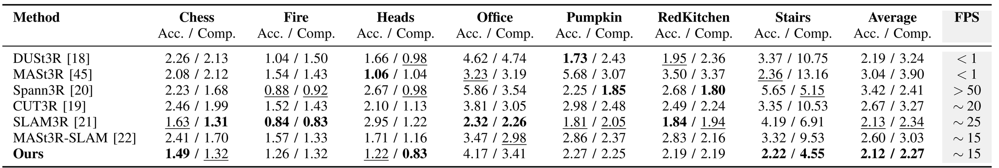
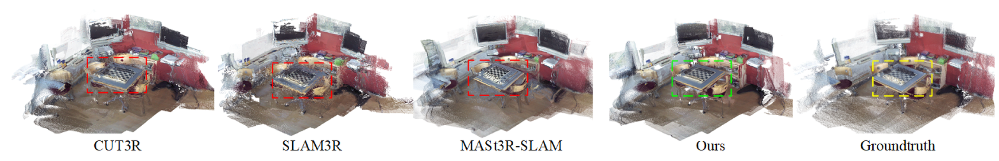
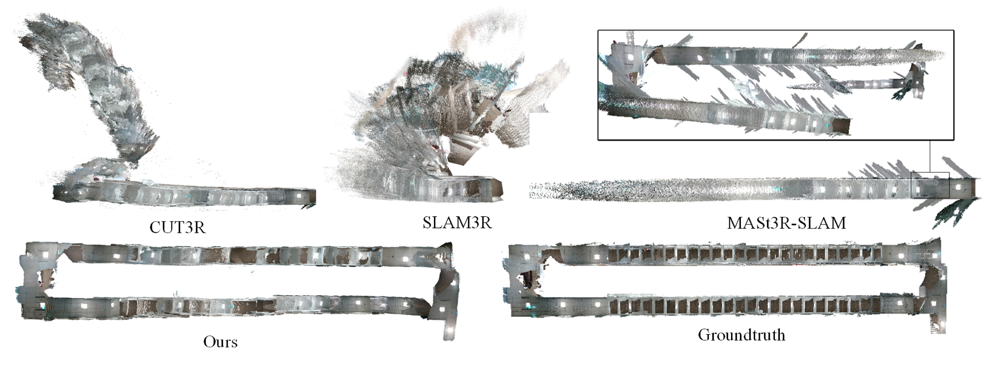
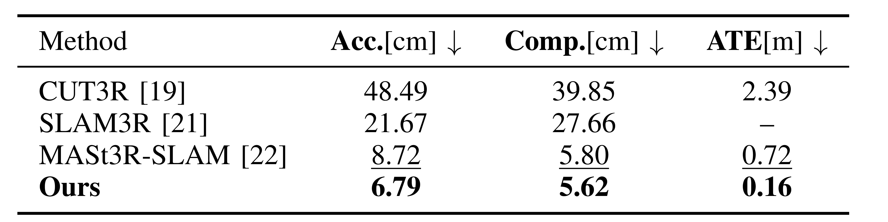
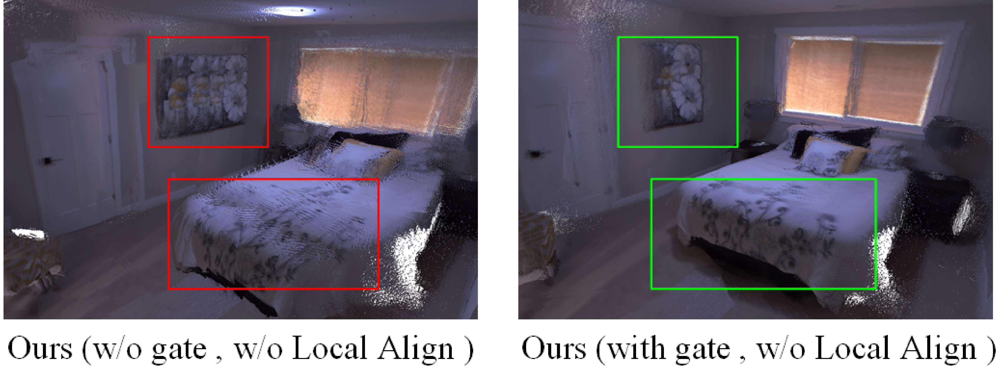
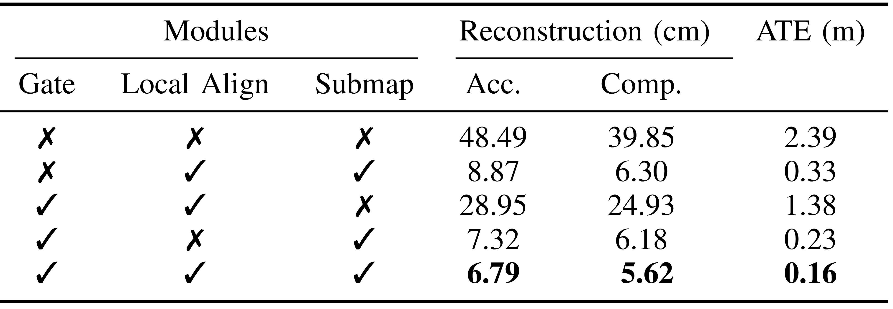
Usage / Limits: 어떤 상황에 잘 맞나
GRS-SLAM3R은 RGB-only 입력으로 dense geometry와 pose를 동시에 얻고 싶고, offline global alignment보다 빠른 online 동작이 필요한 상황에 잘 맞는다. 반면 하나의 실시간 시스템이므로, 매우 큰 loop closure나 domain gap이 큰 outdoor scene에서는 submap registration 품질과 covisibility threshold를 따로 확인해야 한다.
논문의 실험과 구조를 application 조건으로 정리하면 다음과 같다.
| 구분 | 요약 | 이유 |
|---|---|---|
| Good fit | RGB-only dense indoor SLAM | depth나 camera intrinsics 없이 dense point cloud와 pose를 함께 출력. |
| Good fit | real-time reconstruction이 중요한 경우 | offline global alignment 계열보다 빠른 online pipeline을 목표로 함. |
| Check carefully | long corridor, large loop, weak overlap | submap split과 pose graph constraint 품질이 전체 drift를 좌우. |
| Limitation | 정밀한 metric map이 최우선인 경우 | online speed와 dense reconstruction을 함께 노리므로 추가 refinement가 필요할 수 있음. |
느낀점
(진행중...)
Problem: why is DUSt3R-style 3D not enough for SLAM?
GRS-SLAM3R starts from the gap between strong pairwise pointmap prediction and online dense SLAM. DUSt3R-style methods can recover dense 3D without camera calibration, but online SLAM also needs long-term spatial memory and global consistency.
The hard part is not only predicting a pointmap, but accumulating it over time and organizing it as a global map.
Estimate pose and dense geometry from RGB streams.
Pairwise 3D prediction does not provide online memory by itself.
Noisy observations or outdated memory can drift the latent state.
A single recurrent state is not enough to control long-range drift.
Related Work context
The paper compares dense monocular SLAM, 3D reconstruction, and DUSt3R-based online reconstruction, then positions itself as real-time RGB-only dense SLAM.
| Lineage | Strength | GRS-SLAM3R's concern |
|---|---|---|
| Sparse / feature SLAM | fast and stable tracking | sparse maps are insufficient for dense geometry use cases. |
| NeRF / 3DGS SLAM | high-quality dense representation | often relies on depth, intrinsics, optimization, or limited speed. |
| DUSt3R / MASt3R | camera-free pointmap prediction | pairwise 3D priors must be extended into online SLAM memory. |
| CUT3R / SLAM3R | continuous reconstruction | memory update, forgetting, and long-sequence drift need stronger handling. |
Mechanism: how do gated state and submaps work together?
The method has two main axes. The frontend predicts frame-level pointmaps and pose with a gated recurrent state. The backend uses keyframes and submaps for local alignment and inter-submap pose-graph registration.
GRS-SLAM3R avoids blindly accumulating one latent state: gates control memory updates, and submaps break long-horizon drift.
| Module | Problem handled | Output / effect |
|---|---|---|
| Encoder | turns the current frame into tokens | \(F_t\) |
| Reset gate | suppresses irrelevant memory before fusion | \(M_t^{\mathrm{reset}}\) |
| Decoder | mixes memory, image, and pose tokens | candidate memory and enriched features |
| Update gate | balances new and previous memory | \(M_t\) |
| Submap alignment | limits long-sequence drift | local maps and global pose graph |
The input is a monocular RGB sequence \(\{I_t\}_{t=1}^{N}\). The outputs are dense point cloud \(X_t\), confidence \(C_t\), and camera pose \(P_t\).
The reset gate suppresses outdated memory, the decoder exchanges information between memory/image/pose tokens, and the update gate blends candidate memory with previous memory.
After decoding, the network predicts both local-camera and world-frame pointmaps. This is why the method fits online SLAM better than pairwise pointmap-only reconstruction.
Frames are promoted to keyframes and new submaps according to covisibility with the last keyframe and current submap anchor. Each submap keeps its own latent memory and local coordinate frame.
Training loss and notation
The paper follows CUT3R with confidence-weighted 3D regression and pose loss. These are supporting details relative to the gated/submap mechanism.
| Symbol | Meaning | Role |
|---|---|---|
| \(\hat{x}_i\), \(x_i\) | predicted / GT 3D point | scale-normalized pointmap supervision. |
| \(c_i\) | confidence | down-weights hard points while \(-\beta\log c_i\) avoids collapse. |
| \(\hat{q}_t\), \(\hat{\tau}_t\) | rotation / translation of predicted pose | pose supervision with normalized translation. |
Evidence: how are pose, reconstruction, and runtime evaluated?
The evaluation covers camera pose, surface reconstruction, real-time performance, and ablations. The main metrics are ATE-RMSE for tracking and accuracy/completeness for reconstruction.
The results are easier to read by SLAM capability rather than by dataset name.
ATE-RMSE on 7-Scenes.
Reconstruction quality on NRGBD, 7-Scenes, Apartment, and NES.
FPS and ablations for gate, local alignment, and submaps.
Usage / Limits: when is it useful?
GRS-SLAM3R is useful when RGB-only dense geometry and pose are needed online. For very large loops, weak-overlap scenes, or strong domain shift, submap registration quality and covisibility thresholds should be checked carefully.
The experiments and system design suggest the following application conditions.
| Category | Summary | Reason |
|---|---|---|
| Good fit | RGB-only dense indoor SLAM | outputs dense point clouds and pose without depth or intrinsics. |
| Good fit | real-time reconstruction | targets an online pipeline faster than offline global alignment. |
| Check carefully | long corridors, large loops, weak overlap | submap split and pose-graph constraints control global drift. |
| Limitation | high-precision metric mapping as the only priority | online speed and dense reconstruction may still require refinement. |
Takeaway
(Writing in progress...)
Comments